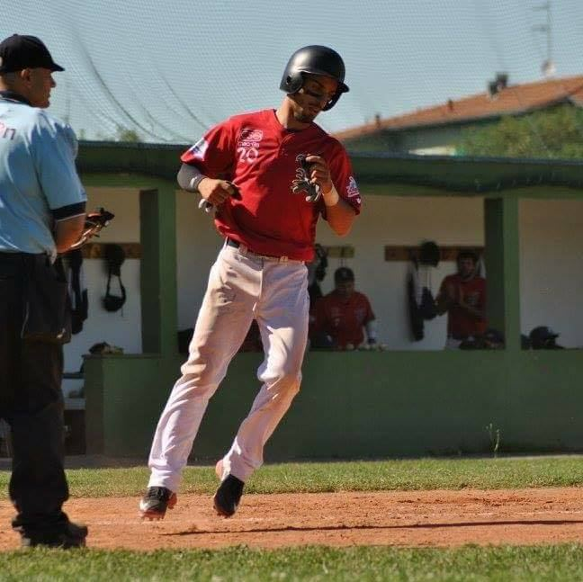
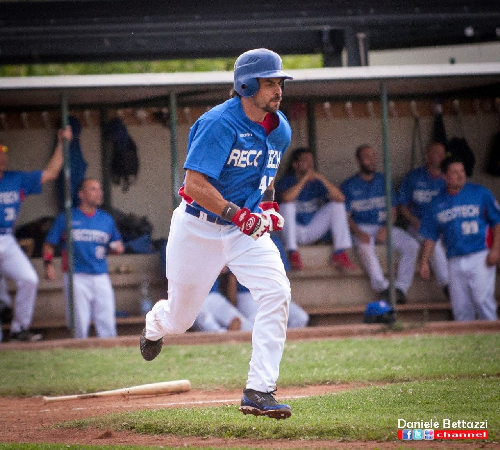

Inizia dell’anno ricco di novità in casa Lancers, dopo aver ufficializzato Reggioli nelle settimane scorse ecco che il Direttore Sportivo Ciappi, a nome della società e del consiglio direttivo, annuncia la conferma di Rudaj Arberim, altro giovane interno fiorentino di belle speranze.
Arberim, passato ai Lancers lo scorso anno, ha ben figurato nella sua prima stagione di Serie B sia dal punto di vista tecnico che umano.
Ha ricoperto principalmente il ruolo di seconda base e in un paio di occasioni è stato chiamato a difendere anche l’interbase dimostrandosi affidabile e concreto.
Il giovane di origini kossovare, che compirà 22 anni questa stagione, ha voluto fortemente restare nel club lastrigiano grazie anche all’affinità creatasi con i compagni di squadra; anche la dirigenza e lo staff tecnico hanno sostenuto da subito la sua ri conferma premiando così un atteggiamento serio e maturo.
Ringraziamo ancora una volta la società Chianti Baseball, nella figura del presidente Guido Puliti, per la fattiva collaborazione.
A rinforzare il campo esterno ci penserà il veterano Fabio Guasti, classe 1980, che ha accolto con entusiasmo il progetto presentatogli da Ciappi in fase di trattativa. Guasti è cresciuto nella Fiorentina Baseball con la quale ha esordito in Serie A2 nel 1999, il passaggio al Padule Baseball avviene nel 2003.

Con la squadra di Sesto Fiorentino, Fabio, resterà fino al 2016 partecipando ai campionati di Serie A2, Serie B e Serie A federale, conquistata con il campionato del 2012.
Lo scorso anno il ritorno a Firenze dopo 14 campionati trascorsi con i colori del Padule, un annata con poco spazio in campo che ha probabilmente influenzato la scelta di Fabio di vestire i colori dei Lancers tornando così a divertirsi sporcandosi di terra rossa.
Le caratteristiche principali di Guasti sono una forza fisica ed una velocità di gambe superiore alla media, attributi che ne fanno un battitore temibile per la Serie B. Fabio si è già unito al gruppo, ritrovando vecchi compagni ed amici, e segue con interesse il programma di preparazione atletica del nuovo staff tecnico.
Intanto arrivano i primi “rumors” sulla prossima Serie B, Lucca nelle settimane scorse ha comunicato che probabilmente farà un passo indietro tornando in C, l’augurio dei Lancers è che la squadra lucchese riesca a superare presto i problemi che si sono creati e possa affrontare la categoria conquistata sul campo.
La Fiorentina ha ufficializzato che non parteciperà al campionato Serie A e potrebbe, in caso di ripescaggio, tornare a scontrarsi con i lastrigiani per un derby che si preannuncia molto interessante.
Aspettiamo notizie anche dal grossetano dove i Red Jack, freschi di promozione, si stanno preparando ad affrontare il campionato cadetto.